|
|
HELP FIND THE FOLLOWING LOCATIONS
PAGE 36
THE SAINT:
The
Spanish Cow (John
Gilling: April 1965)
Monte Carlo, Monaco, France
- Establishing shot for the South of France.
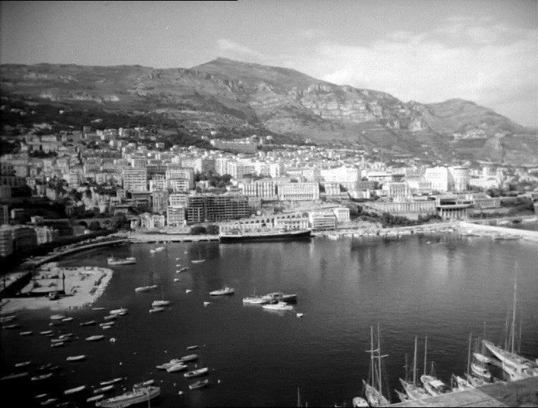
Hydra, Greece - Establishing shot for the South of France.
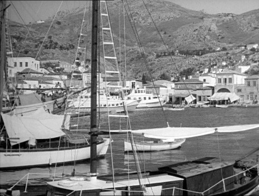
Positano, Campania, Italy - Establishing shot for the South of France.

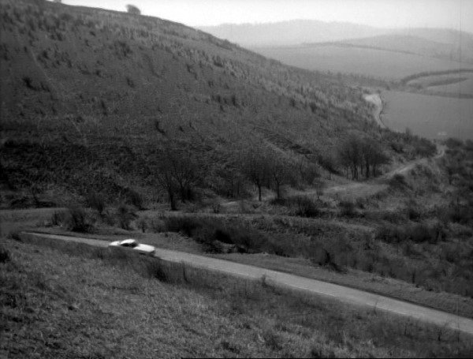
Unknown 1 - Simon Templar is driveing through the South of France.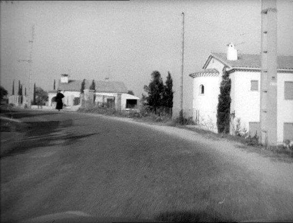
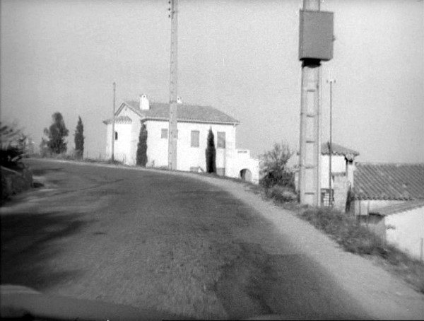
 Probably Algeciras, Spain footage shot
for Man of
the World
Probably Algeciras, Spain footage shot
for Man of
the World
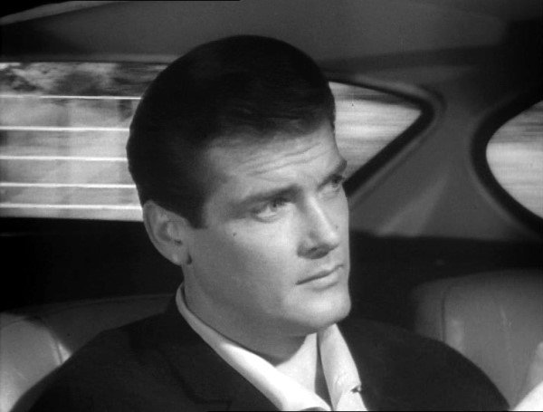
Unknown 3 - Shot for the South of France over the title credts.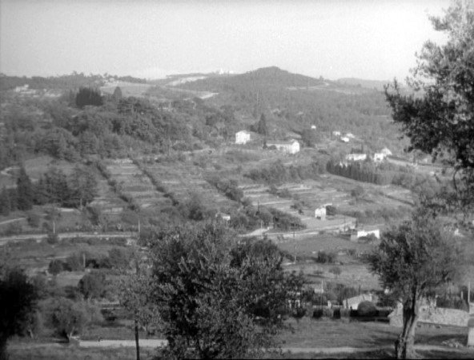
Unknown 4 - Dona Luisa Arroyo and Consuela Flores drive quickly away after encountering Simon Templer at a petrol station.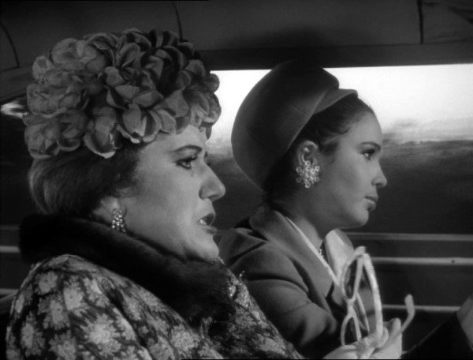
Whale Beach, Sydney, New South Wales, Australia - Establishing shot of South of France beach.
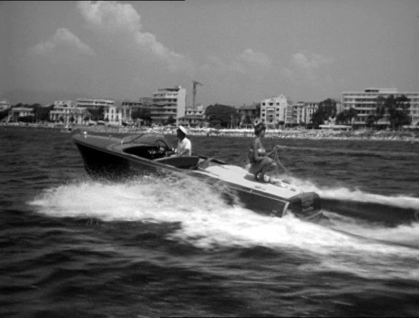
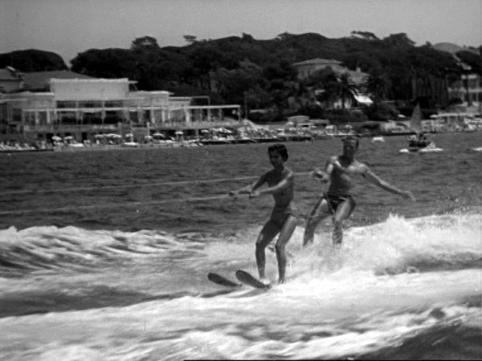
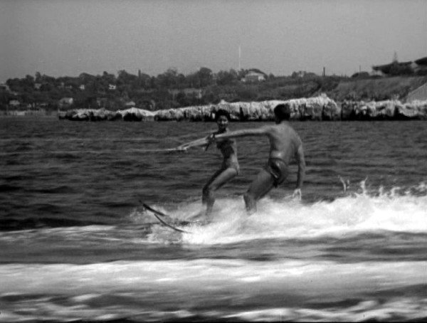
Unknown 5 - Establishing shot for the South of France.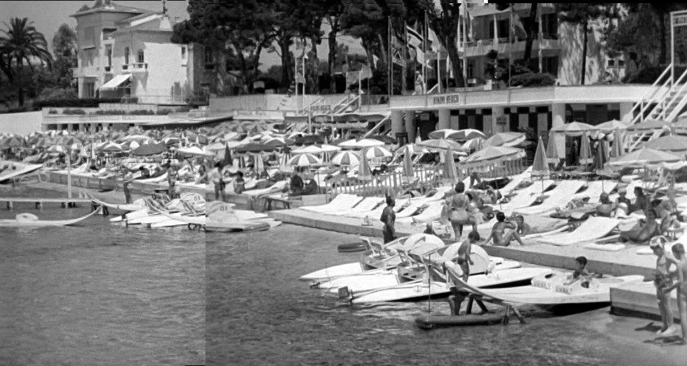
Boulevard de la Croisette, Cannes, France - Establishing shot for the South of France resort where Simon is staying.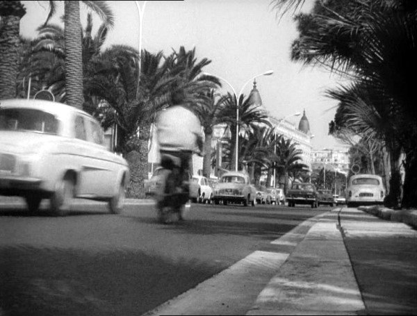
Diario De Cádiz, Plaza De San Juan de Dios, Cádiz, Spain - The hotel where Simon is staying in the South of France.(Spotted by Geoff Dodd, May, 2023)

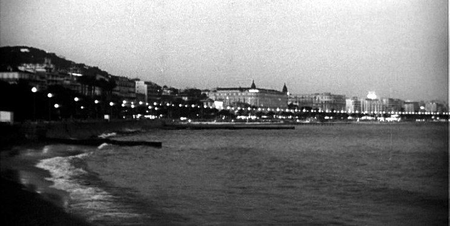
Unknwon 6 - Gilberto Arroyo discusses his plans with the gang at a resort bar.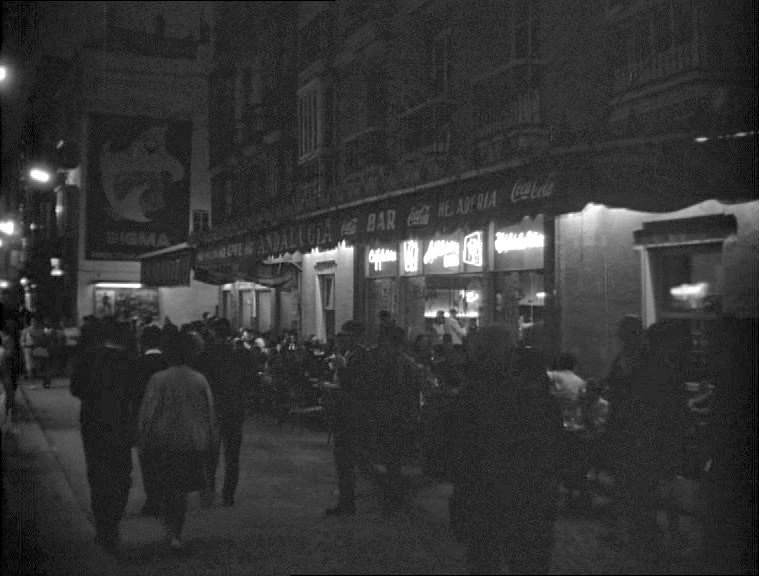
Probably Algeciras, Spain or nearby Cadiz.
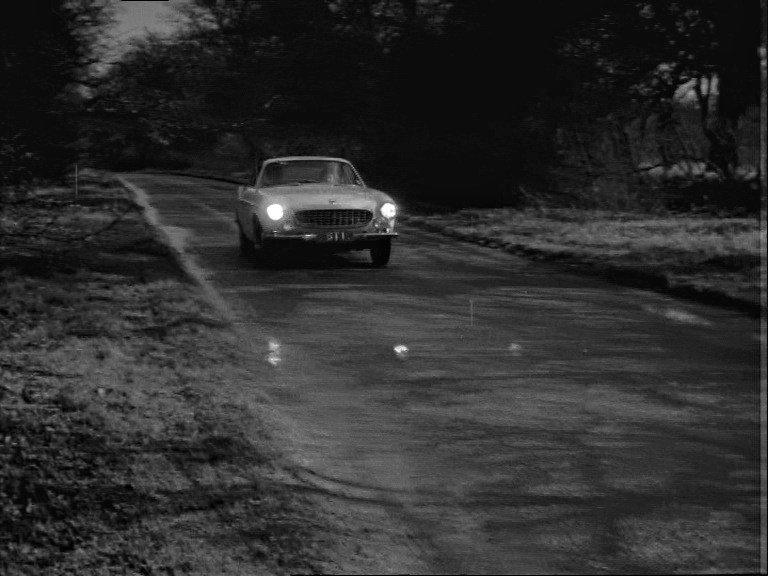
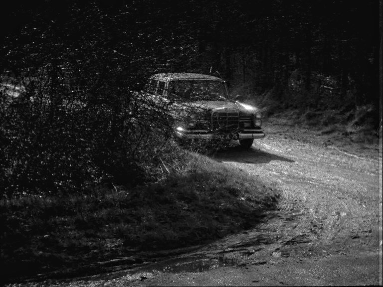
Plaza De San Juan de Dios, Cadiz, Spain - Arroyo discusses his plans with his comrades at a bar.
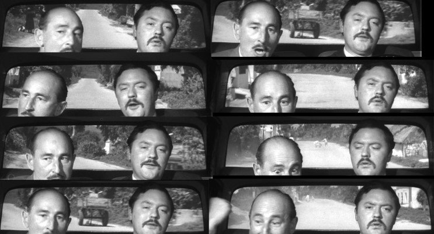
Probably Algeciras, Spain footage shot
for Man of
the World

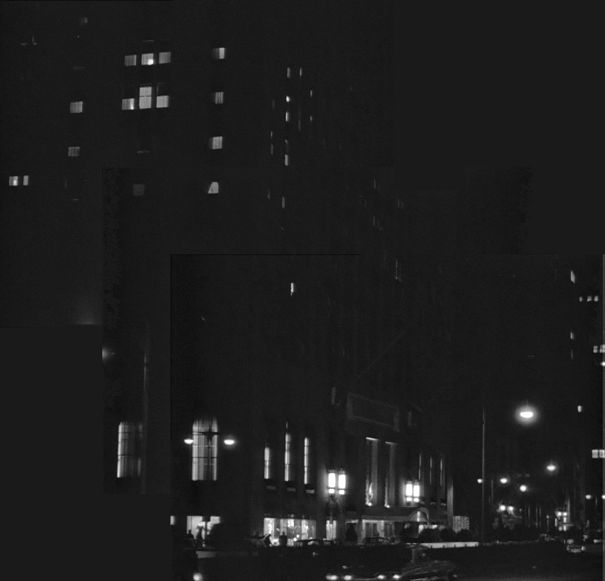
Think you know a spot? Need a bigger image? Email me.
< Previous | Index | Avengerland | Next >
Copyright © 2023 Anthony R. McKay